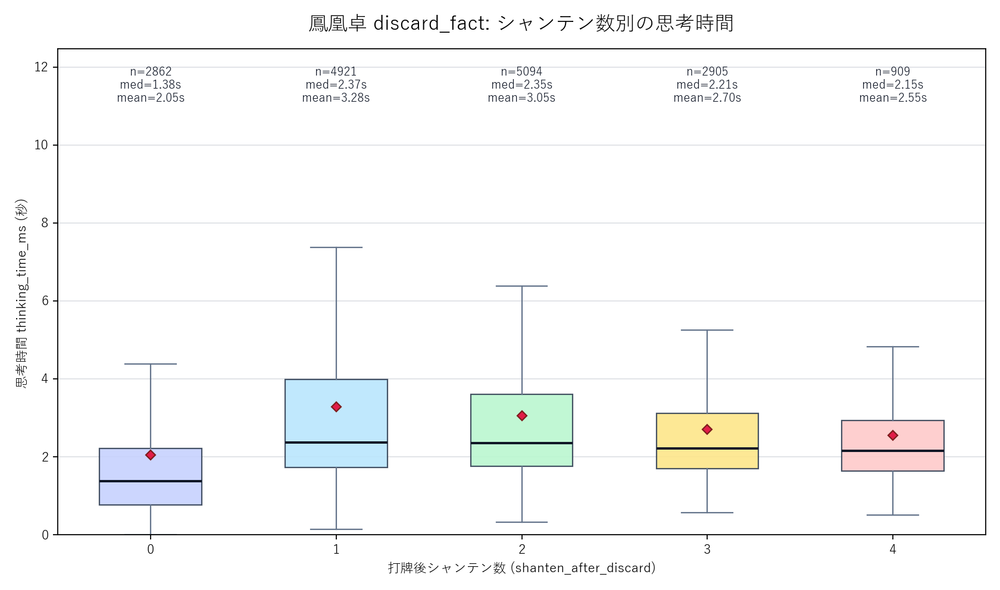
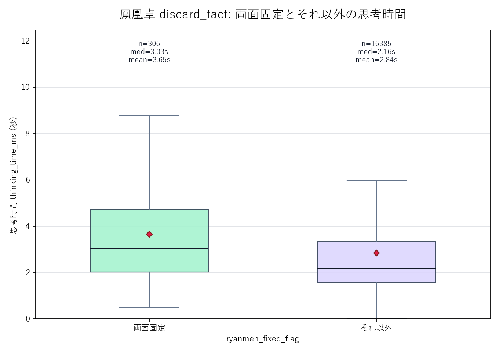

対象: room_class_label == 鳳凰卓、thinking_time_ms がある行。シャンテン別と両面固定比較は shanten_after_discard 0〜4 に限定。
source_files=discard_fact_202604.csv, discard_fact_202605.csv / all_rows=165510 / houou_rows=20496 / houou_valid_thinking_rows=20019 / houou_valid_shanten_0_4_rows=16691 / ryanmen_comparison_rows=16691

| shanten_after_discard | n | mean_s | median_s | p25_s | p75_s | p90_s | p99_s |
|---|---|---|---|---|---|---|---|
| 0 | 2862 | 2.046 | 1.380 | 0.763 | 2.208 | 4.179 | 12.159 |
| 1 | 4921 | 3.276 | 2.367 | 1.730 | 3.989 | 6.645 | 12.327 |
| 2 | 5094 | 3.050 | 2.352 | 1.751 | 3.605 | 5.710 | 10.976 |
| 3 | 2905 | 2.701 | 2.211 | 1.692 | 3.115 | 4.624 | 8.770 |
| 4 | 909 | 2.546 | 2.145 | 1.638 | 2.937 | 4.343 | 7.943 |

| group_label | n | mean_s | median_s | p25_s | p75_s | p90_s | p99_s |
|---|---|---|---|---|---|---|---|
| 両面固定 | 306 | 3.647 | 3.028 | 2.021 | 4.733 | 6.628 | 12.172 |
| それ以外 | 16385 | 2.842 | 2.158 | 1.564 | 3.333 | 5.516 | 11.293 |